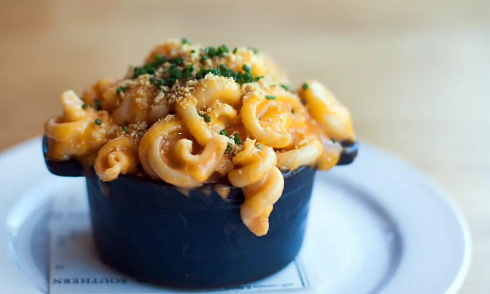

Mornay Sauce Mac and cheese
Try This: Mac and Cheese Recipe

Description
One tip? “The pasta should be fully cooked through to al dente,” says Kunkel. “However right before you add the pasta to the mornay, you want to flash it in boiling water for 45 seconds.” As always, use your gut feel to make sure that the pasta has some bite for it to hold up while being cooked in the mornay sauce.
Ingredients
- Mac and Cheese
- 170g torchio pasta
- 170g mornay sauce
- 1/4 shredded cheddar cheese
- 1/2 tsp toasted bread crumbs
- 1/8 tsp minced chives
- Mornay Sauce
- 3 Tbsp Unsalted Butter
- ¼ cup Flour
- 2 cups Whole Milk
- 1/8 tsp Paprika
- Hot Sauce to taste
- Dijon Mustard to taste
- Kosher Salt to taste
- 56g Cream Cheese
- 56g Shredded Parmesan
- 56g Shredded White Cheddar
- 56g Shredded Cheddar
Steps
- Preheat oven to 350˚F.
- Prepare the mornay sauce:
- melt the butter in a small saucepan over medium heat;
- add the flour, whisking constantly.
- When the butter and flour is blended completely, add the milk, whisking rapidly.
- Continue whisking until the mixture is thickened.
- Add in the four cheeses and stir over low heat until the cheese melts;
- remove from heat. Add the paprika and season with some salt, hot sauce and dijon mustard.
- Meanwhile, cook the pasta in salted boiling water until al dente; drain.
- Toss the pasta in the mornay sauce over medium heat until well coated. Sprinkle the cheddar cheese over top and place in the oven for 45 minutes.
- Remove from the oven and let cool slightly; sprinkle with the chives and breadcrumbs before serving.